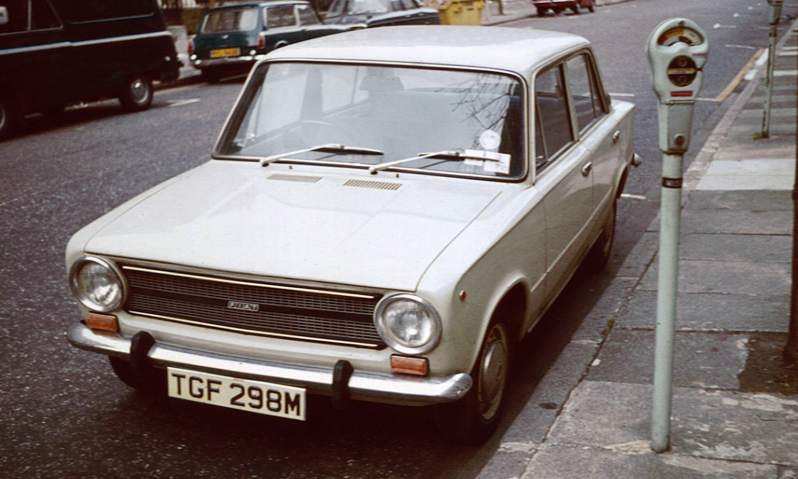

Перший Fiat

Перший автомобіль під брендом "Fiat" відомий як Fiat 4 HP. Цей автомобіль був представлений у 1899 році.
Він був створений Жаном Джакомо Ратціо та його партнерами, засновниками компанії Fiat.
Fiat 4 HP був малим і компактним автомобілем, призначеним для міського використання. Він оснащувався
2-циліндровим двигуном з об'ємом 679 куб. см і мав потужність 4 кінських сил. Максимальна швидкість цього
автомобіля становила близько 35 км/год.
Fiat 4 HP був вироблений у невеликій кількості, але він став важливим кроком в розвитку компанії Fiat і
італійської автомобільної промисловості загалом. Він показав потенціал компанії в автомобільному виробництві
та її здатність виготовляти надійні та доступні автомобілі.
Fiat продовжує бути одним з найбільш відомих автомобільних брендів у світі, відомим своїми стильними дизайнами,
економічними моделями та широким модельним рядом автомобілів.